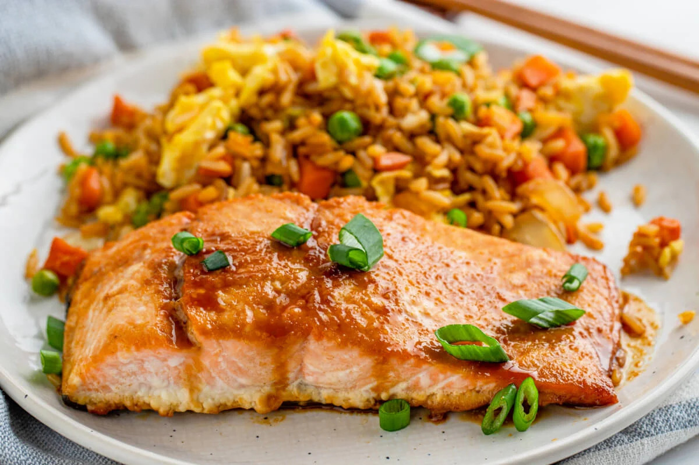

Description
Fried salmon served with microwave rice and boiled frozen vegetables. A quick and balanced meal that feels healthy and doesn't take much effort to prepare.
Ingredients
- Fresh Salmon
- Microwave rice
- Frozen vegetables
- Teriyaki stir fry sauce
Steps
- Preheat oil in a pan on medium-low heat
- Place salmon in pan, cover in teriyaki sauce
- Cook for 14 minutes, turning halfway
- Place frozen vegetables in boiling water, boil for 5 minutes
- Tear the top of the rice package and microwave for 90 seconds
- Plate and serve